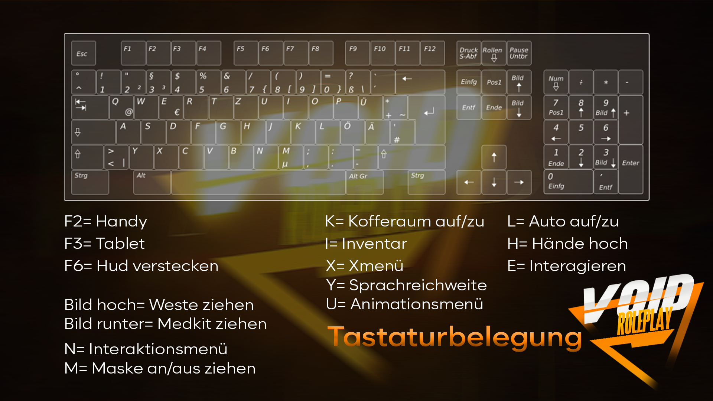

Informationen
Guide
ACHTUNG! Hier sind lediglich Grundlegende Informationen zu verschiedenen Systemen!
Levelsystem (Visumsystem)
Durch aktives Spielen auf dem Server erhaltet Ihr Level. Je nach Level erhaltet ihr höheren Sozialbonus (siehe Leveltabelle).
Handy & Tablet
In jedem Supermarkt könnt Ihr euch ein Handy, sowie Tablet kaufen. Zur besseren koordination verfügt das Handy über eine GPS-App.
Eure Fahrzeuge werden nicht in jeder Garage verfügbar sein, Ihr könnt Sie nur in der Garage, in welcher Ihr eure Fahrzeuge zuletzt eingeparkt habt wiederfinden.
Um euch dies zu erleichtern haben wir eine Fahrzeug-App in das Tablet eingebaut, über welche Ihr das Fahrzeug (insofern es ausgeparkt ist) oder die jeweilige Garage (insofern es eingeparkt ist) Orten könnt.
Routen/Farming/Geld machen
Euch reicht der Sozialbonus nicht? Dann könnt Ihr auf unseren Farmingrouten Illegal oder Legal an weiteres Geld gelangen.
Ihr seid auf der Legalen schiene?
Dann geht doch am Pier Angeln oder am Vespucci Beach Muscheln sammeln.
Euch reicht das Geld nicht und Ihr wollt mehr?
Dann sucht euch die Illegalen Routen und erfarmt euch Rohestoffe um diese zu Verarbeiten und an Bad-Fraktionen zu verkaufen.
Schon in einer Bad-Fraktion?
Dann besuch mal den Baumarkt und Verarbeite 50 Verarbeitete Rohestoffe zu einer Kiste
Tipp: Verkaufe diese am Dealer, aber jeder Dealer hat andere Preise!
Keine Lust den Dealer zu suchen?
Wenn du 2.500$ auf der hohen Kante hast, kannst du dir in deinem Fraktionslager einen Dealertipp kaufen, welcher für die ganze Fraktion verfügbar sein wird.
Information: Euch wird ein Wegpunkt zu einem der 4 Dealer gesetzt, jede Fraktion kann 1 mal Pro Restart einen Dealertipp kaufen!
Fahrzeuge
Jeder kann sich bei den vorgegebenen Fahrzeughändlern (sieh GPS-App) ein Fahrzeug zulegen.
Sobald der Kauf abgeschlossen ist wird dieses in die jeweilige Garage des Fahrzeughändlers eingeparkt (unmittelbar erkennbarer NPC).
Jeder kann den Schlüssel seines Fahrzeuges an dritte weitergeben, dafür muss lediglich ein Schlüssel am DMV Shop erworben werden und dieser in der nähe des Fahrzeuges und Spielers (welcher danach über einen zweiten Schlüssel verfügen soll) benutzt werden.
Auch für sein Business kann man ab dem Business Rang Manager Fahrzeuge mit dem Business teilen, dafür muss man nur mit dem gewünschten Fahrzeug vor den Businesstower fahren und mit "E" eine Bestätigungsbox öffnen.
Sollten Spieler nicht mehr auf die Fahrzeuge zugreifen sollen, so kann man ebenfalls am DMV Shop ein Schloss holen und dies im Fahrzeug benutzen.
Dadurch werden alle Schhlösser ausgetauscht und niemand verfügt mehr über einen zeweiten Schlüssel oder hat Zugriff auf das Businessfahrzeug.
Sollte ein es zu einem Fehlkauf kommen oder man möchte das Fahrzeug nicht mehr nutzen, so kann man an den zwei Schrottplätzen das Fahrzeug verschrotten und erhält 20% des Kaufpreises.
Häuser & Lagerhallen
Ihr könnt (insofern die Lagerhallen und Häuser bereits registriert sind) euch Häuser, sowie Lagerhallen kaufen.
Durch den Stauraum einer Lagerhalle könnt ihr wesentlich mehr Items Lagern als in gewissen Fahrzeugen.
Im Innenraum der Lagerhalle könnt ihr diese auch bis zu Stufe 3 Upgraden, was euch mehr Lagerraum bringt.
Wenn Ihr jedoch eigene Garagen, Keller oder Waschkeller braucht, empfehlen wir euch ein Haus zuzulegen.
Je nach Lage des Hauses und Preis verfügen diese über verschiedene Features.
In z.B. kleinen Häusern, habt ihr nicht viel Auswahl, diese verfügen meist nur über einen Keller und eine Garage.
In jedoch teuren Villen, könnt ihr euren Kriminellen Machenschaften freien lauf lassen mit Bspw. einem "Waschkeller".